Modelo Supervizado
Las siguientes tablas contiene las variables numéricas utilizadas para el modelo no supervizado de Machine Learning con el cuál se realizó el pronósitco del salario (Tabla 1) y valor de mercado (Tabla 2) que le correspondería recibir, al menos en un aspecto teórico, a las jugadoras profesionales de fútbol.
La decisión de separar en dos el modelo tuvo la finalidad de verificar cuál de los dos, o los dos, modelos tenía una mejor predicción.
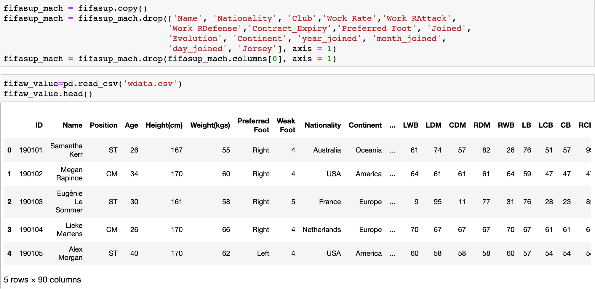
Sin embargo, ambos modelos funcionaron de manera correcta y se vieron robustecidos con XGBoost.
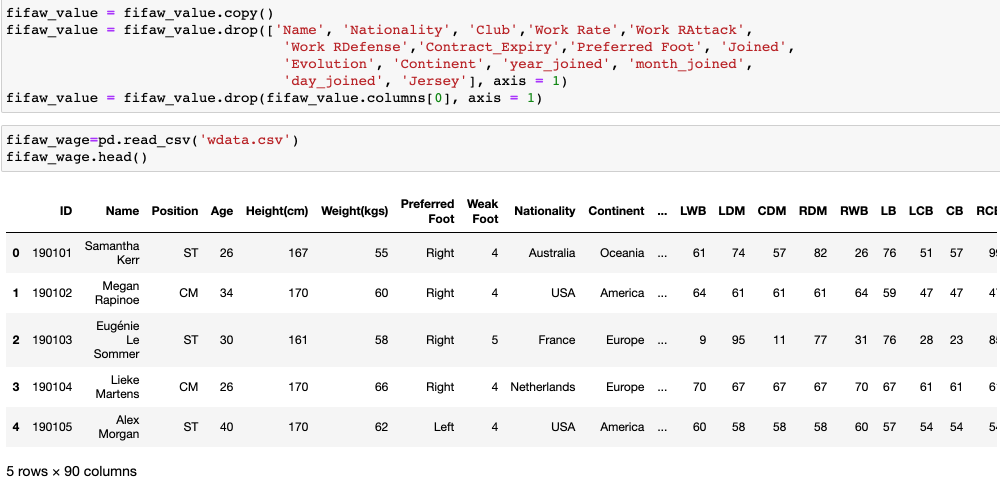
El modelo realizó 32 iteraciones antes de encontrar los mejores valores posibles. Posteriormente, reentrené el modelo para obtener la mejor predicción posible. La potencia de XGBoost quedó evidenciado fortalecer cada uno de los calsificadores débiles que me brindaran el mejor pronósticos posible sobre las variables objetivo.
Una de las ventajas de trabajar con XGBoost es que permite trabajar con una gran cantidad de variables, lo que seerá de grán ayuda cuando en una segunda etapa tenga un DataFrame mucho más grande y donde, a través de web scrapping, introduzca la información existente de las jugadoras femeniles registradas en el juego y de la información que obtenga de diversas fuentes de información.
Una vez que se tuvo el modelo entrenado y con el pronosticador final, tomé la información de 15 jugadoras para como serían sus valores teóricos en cuanto al salario. Antes de describir los resultados, es importante mencionar que en México, una jugadora profesional recibe, en promedio, $4,500 pesos mensuales mientras que un jugador masculino gana $635,000 pesos.
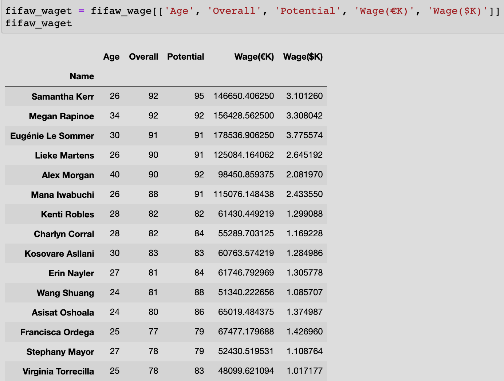
Con base en la predicción, las jugadoras mexicanas Kenti Robles, Charlyn Corral y Stephany Mayor deberían de percibir un salario (teórico) de $1,293,101, $1,163,833 y $1,103,651 pesos de manera anual.
En términos mensuales, las jugadoras estarían percibiendo $107,758, $96,986 y $91,970 pesos mensuales. Una cantidad por encima de los $4,500 pesos que algunas jugadoras en la realidad reciben.
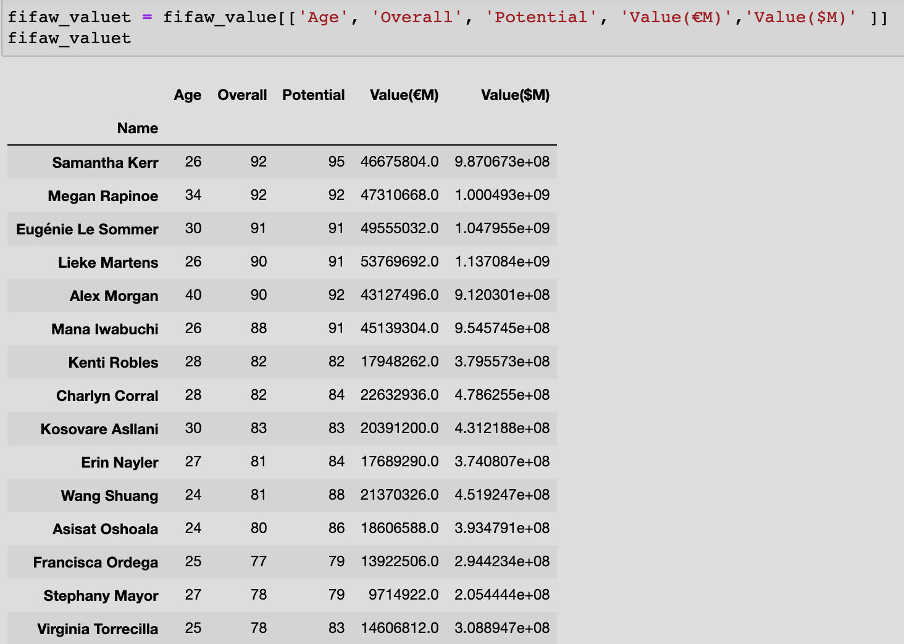
Por otro lado, el valor de mercado de dichas jugadoras deberían situarse alrededor de $377,810,915 (€17 millones), $463,100,000 (€22 millones) y $189,450,000 (€9 millones).
Desafortunadamente, no existe información sobre el valor de mercado de las jugadoras como sí lo hay para los hombres en Transfermarkt.
Modelo No Supervizado
La segunda parte del modelo de Machine Learning consistió en intentar clusterizar a los jugadores registrados en la base de datos. La lógica detrás de esto era identificar si realmente los valores de mercado y salario son tan diferentes como lo observado en los insights que vimos previamente.
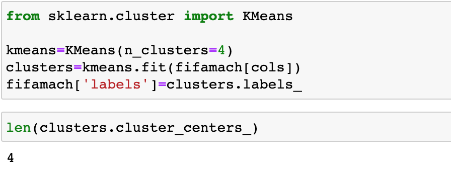
Utilizando el método de agrupamiento KMeans, que tiene como objetivo la partición de un conjunto de n observaciones en k grupos en el que cada observación pertenece al grupo cuyo valor medio es más cercano, se propuso una categorización de 4 tipos de jugadores que son: 1) jugadores en desarrollo, 2) jugadores consolidados y cerca del retiro, 3) jugadores consolidados con proyección, y 4) súper estrellas.
La siguiente imagen muestra los resultados de la clusterización que realiza KMeans.
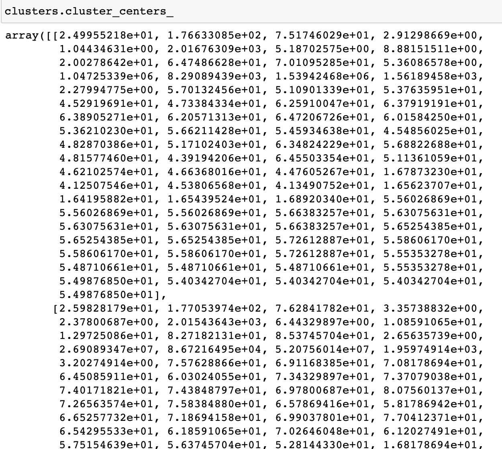
En esta imagen, se observan las predicciones de la clusterización para determinar las 4 etiquetas y la división del DataFrame que tendremos como resultado de este modelo.
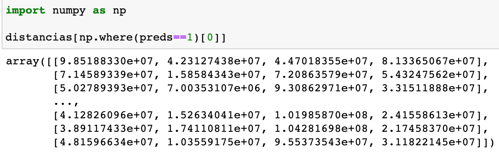
Por ejemplo, dentro de los jugadores que pertenecen al clúster 2 podemos encontrar a J. Rodríguez, G. Higuaín, Iniesta, entre otros; es decir jugadores consolidados con proyección.
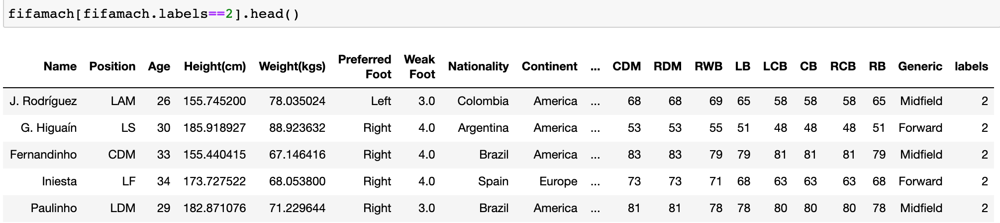
Por ejemplo, dentro de los jugadores que pertenecen al clúster 1 podemos encontrar a L. Messi, Cristiano Ronaldo, Neymar Jr, entre otros, jugadores súper estrellas.
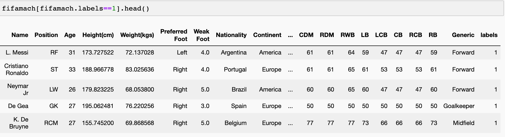
Por ejemplo, dentro de los jugadores que pertenecen al clúster 3 podemos encontrar a D. Godín, M. Neuer, Marcelo, entre otros, jugadores consolidados y cerca del retiro.
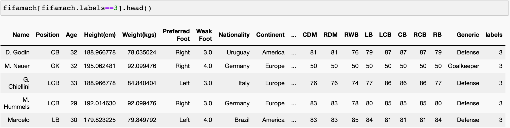
Por ejemplo, dentro de los jugadores que pertenecen al clúster 0 podemos encontrar a G. Buffon, Dani Alves, Iker Casillas, entre otros, jugadores consolidados y cerca del retiro.
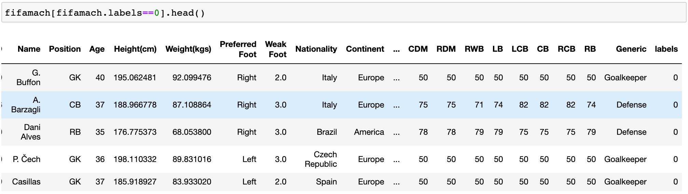
El promedio del valor de mercado y salario por cada uno de los clústers se puede observar en las siguientes imagen.
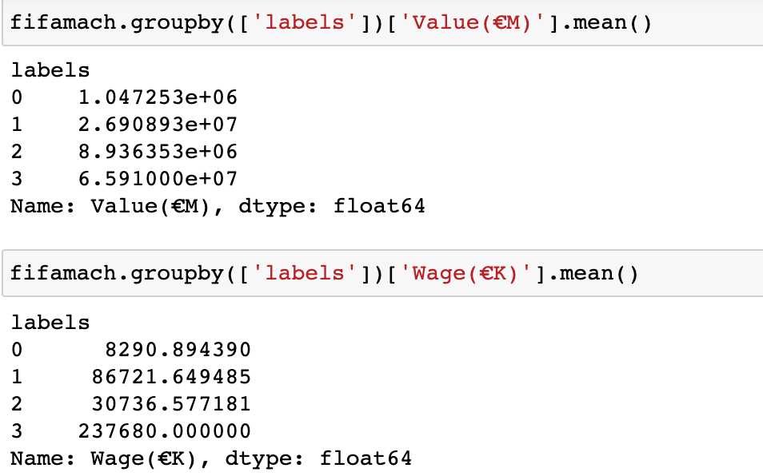
La siguiente gráfica muestra cómo se distinguen los clústeres de los jugadores contenidos en el DataFrame, según su valor de mercado y salario.
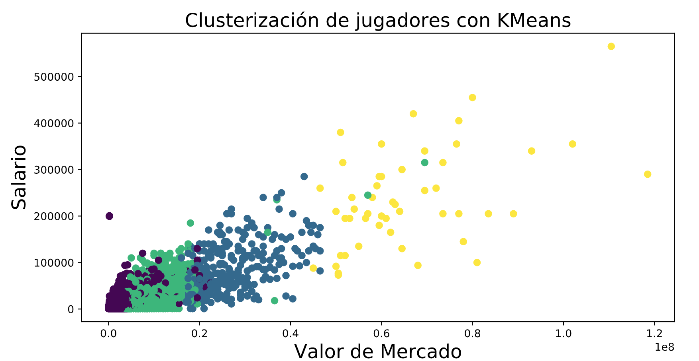
Por otra parte, podemos observar los clústeres, según su valor de mercado y valoración total contenido en el DataFrame.
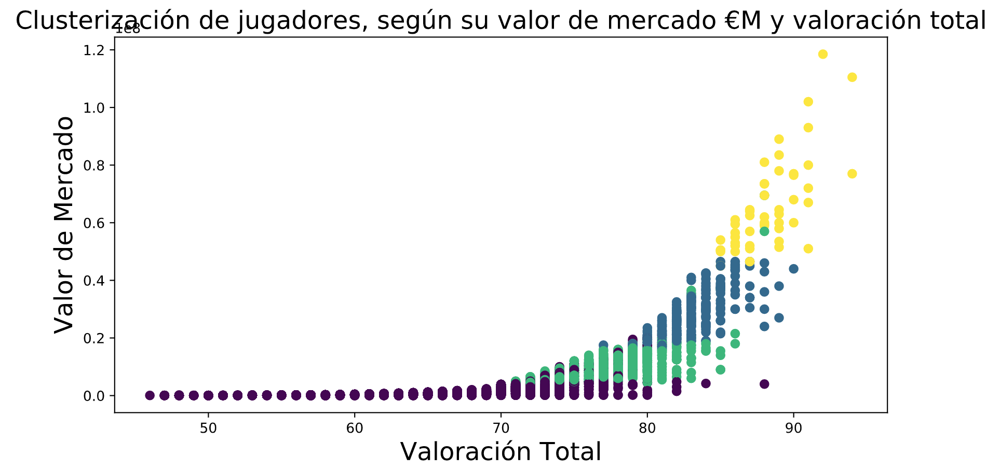
En tanto, podemos observar los clústeres, según su salario y potencial contenido en el DataFrame.
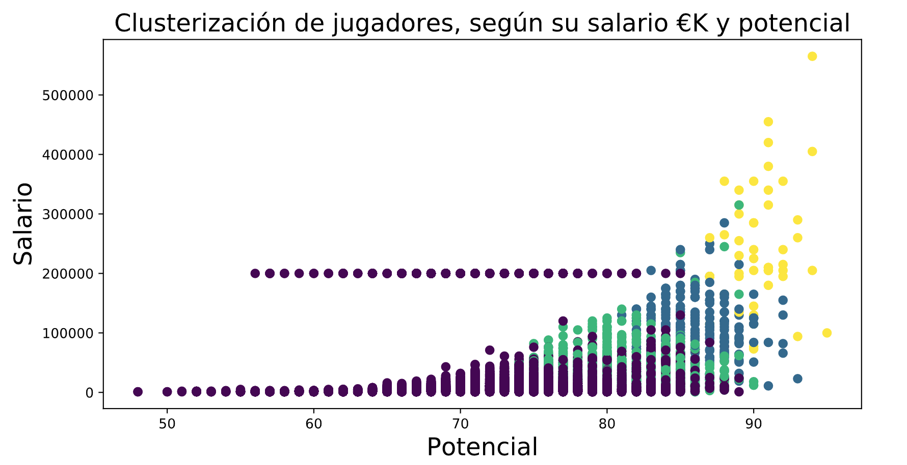
Finalmente, podemos observar los clústeres, según su salario y potencial contenido en el DataFrame.
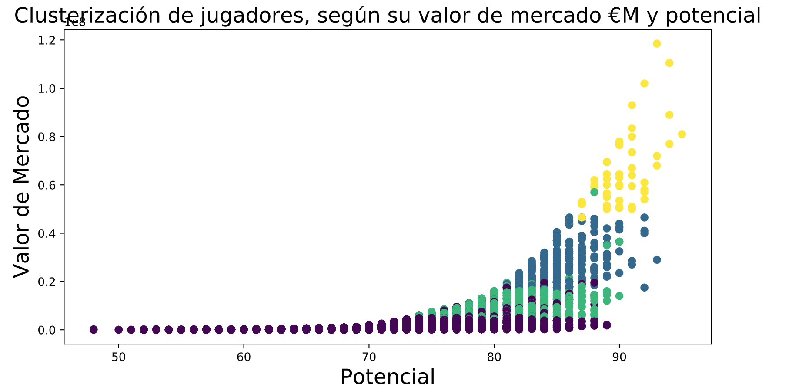